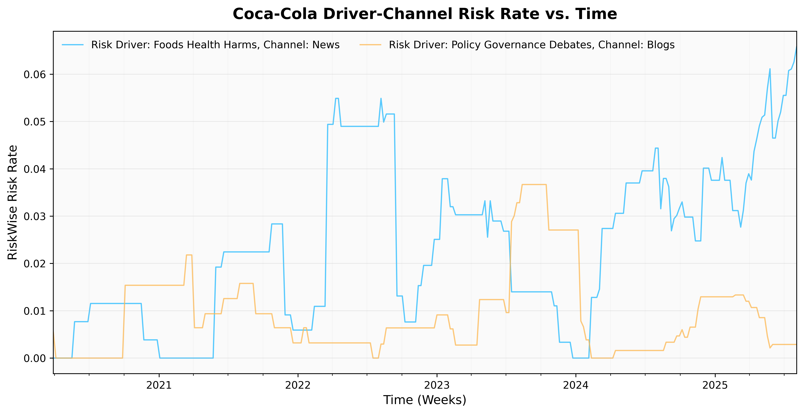
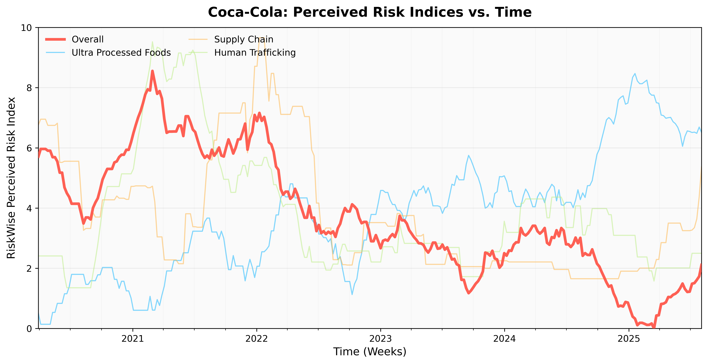
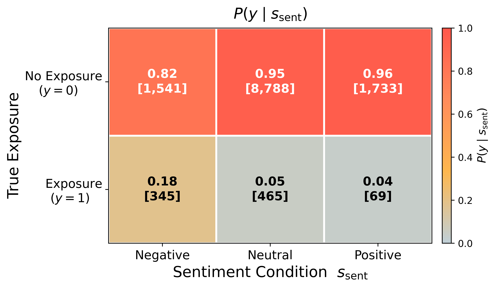

Seeing Risk Clearly: How RiskWise AI Moves Past Emotion to Measure Risk Exposure
“Risk comes from not knowing what you’re doing.”
, Warren Buffett
Introduction
Materialized risk begins as a faint signal. Before lawsuits, recalls, or brand switching occur, traces of exposure ripple across news, legal filings, academic journal, forums, social media, and more. Some are like finding a needle in a haystack, others more obvious, but all are useless unless we isolate the right primitive: one that captures evidence of exposure rather than emotion. At RiskWise AI, we call this primitive perceived risk.
We formalize perceived risk as a risk driver, data channel, and entity-aware evidence measure, where a risk driver represents the underlying mechanism through which exposure occurs. For instance, within the broader risk of Ultra-Processed Foods, risk drivers may include mechanisms such as carcinogenicity, mental-health impact, and regulatory scrutiny, each reflecting a distinct pathway through which exposure manifests. **Measuring perceived risk at scale has only become practical with modern AI. More specifically, RiskWise’s proprietary AI search, large language models, and agents allow for very accurate measurement of perceived risk while generalizing to new risk topics and risk drivers. At scale, RiskWise uncovers a latent, directional structure in public discourse, evidence that perceived risk behaves as a coherent, actionable signal rather than mere emotional tone, such as sentiment.
The sections that follow outline the mathematical foundations behind large-scale perceived-risk detection while demonstrating, both empirically and qualitatively, why perceived risk captures a fundamentally different dimension of language than sentiment.
1. Perceived Risk: Mechanism-Aligned Exposure
Perceived risk is a risk driver conditioned signal that expresses exposure evidence about an entity, risk driver, data channel, or topic. It is strongly differentiated from aspect‑based and document‑level sentiment. Most importantly, exposure evidence is detected before negative outcomes materialize e.g. litigation, recalls, or harm to brand reputation.
Now let $d$ $$ be a document (post, article, filing), $e$ an entity (company, product, person), $r$ $$ a risk topic (e.g., PFAS, AI misuse), and $k$ a risk driver (e.g., toxicity, privacy, regulatory scrutiny). We define a binary indicator for “perceived risk exposure evidence present”:
$$ Y_{d,e,r,k}\in{0,1} $$
We target the probability of exposure evidence for each driver:
$$ q_{d,e,r,k}\equiv\Pr\big(Y= \text{exposure} \mid d,e,r,k\big) $$
By contrast, a measure like sentiment (s) is a coarse valence conditioned on $(d,e)$:
$$ s_{d,e} \equiv \Pr\big(Y=\text{positive}\mid d,e\big) $$
commonly used as a proxy for risk in markets, but not mechanism‑aligned for exposure.
2. Perceived Risk by Stochastic Consensus
Operationally, the RiskWise risk scoring LLMs are trained to link an exposure decision $\hat{y}^{(j)}_{d,e,r,k}\in{0,1}$ at temperature $\tau>0$. We aggregate multiple passes with a strict consensus: **
$$ \hat{y}{d,e,r,k} = \mathbb{I}!\left( \frac{1}{n}\sum = 1 \right)}^{n}\hat{y}^{(j)}_{d,e,r,k
$$
At higher sampling temperatures, the model no longer returns a single deterministic exposure evidence. Each prediction samples from the same softmax distribution parameterized by temperature $\tau$. Even at a fixed $\tau$, we can draw from different regions of the distribution, yielding the possibility of different completions for the same input. Thus, running $n$ such passes and observing the fraction that vote “exposure” gives a Monte Carlo estimate of the model’s own internal uncertainty:
$$ \hat q_{d,e,r,k} = \frac{1}{n}\sum_{j=1}^{n}\hat y^{(j)}{d,e,r,k} \approx \mathbb{E}[Y]
$$
Consensus or thresholding across these samples (e.g., unanimity, majority) then converts that estimate into a stable binary decision while suppressing random errors.
Under i.i.d. where $\hat{y}^{(j)}\sim \mathrm{Bernoulli}(p)$, the false‑positive probability for a negative example is $p^{n}$, which decays exponentially in $n$. In practice, the samples are weakly correlated but in RiskWise AI observe a false postivie rate near zero.
3. The Risk Exposure Rate
In practice, we begin with a general query anchored to an entity, e.g., $q(e)$ = “Costco,” executed per channel $c$ and time window $t$. Note that we aggregate documents into time windows e.g. daily, weekly, etc… Let $\mathcal{D}{t,c}(q(e)))$ be the retrieved documents in some time window. Detect mentions of entity $e$ in each document $d$$,$ and apply a similar risk-driver linking methodology from section 2 to obtain $\hat{y}$ :
-
Total entity mentions in $(t,c)$:
$$ N_{t,e,c} = \sum_{d\in \mathcal{D}_{t,c}(q(e))} \mathbb{I}!\left( \text{mention}(d,e) \right)
$$
-
Risk‑linked mentions for topic (r) and driver (k):
$$ R_{t,e,r,k,c}=\sum_{d\in \mathcal{D}{t,c}(q(e))} \mathbb{I}!\left( \text{mention}(d,e) \right)\cdot \hat{y} $$
Thus an entities risk rate is:
$$ \rho_{t,e,r,k,c}=\frac{R_{t,e,r,k,c}}{N_{t,e,c}}\in[0,1] $$
In the context of the entity Costco, the risk rate measures the number of risk‑linked Costco entity mentions for topic $r$, risk-driver $k$, and data channel $c$ normalized by the background count for $(t,e,c)$ . We can then construct a driver panel:
$$ \mathbf{x}{t}(e,r) =\big[\rho \in [0,1]^p\qquad $$}\big]_{k\in\mathcal{K}_r,c\in\mathcal{C}
where each element represents the rate of risk exposure for a specific driver–channel pair. Here, $p$ corresponds to the total number of driver–channel combinations $(|\mathcal{K}_r| \times |\mathcal{C}|)$, giving a complete snapshot of the entity’s exposure profile for topic $r$ at time $t$.

The risk rate provides a snapshot of exposure within a specific time and channel. The driver panel clarifies the distribution of risk exposure between drivers and channels at a particular time. To observe how exposure evolves, and to make the signal usable for downstream models, we extend this formulation over time, transforming rates into an index that tracks emerging risk dynamics.
To illustrate this, in Figure 1 we show Coca-Cola’s driver–channel risk rates over time for the risk topic Ultra Processed Foods . While overall exposure rates remain low in absolute terms, the plot reveals important structure: risk associated with Foods Health Harms (News channel) shows a sustained upward trend, while Policy Governance Debates (Blogs channel) exhibits shorter, policy-driven bursts of attention. This demonstrate how the risk-rate captures the temporal structure of exposure, distinguishing between persistent risks and episodic surges tied to specific channels or risk drivers.
4. From Rate to Index
We then go from the risk rate to tracking emerging risk exposure for downstream applications e.g. litigation or claims forecasting. The matrix
$$ \mathbf{X}{1:T}(e,r)=\big[\mathbf{x}. $$}(e,r),\cdots,\mathbf{x}_{T}(e,r)\big]\in\mathbb{R}^{p\times T
stacks the driver–channel exposure vectors over $T$ time windows for entity $e$ and topic $r$.
Each column represents the entity’s full exposure profile at a given point in time, while each row traces the temporal trajectory of a specific driver or channel.
To compress this high-dimensional panel into a structured, low-dimensional representation, we learn a mapping
$$
\phi:\mathbb{R}^{p}\rightarrow\mathbb{R}^{m}, \quad m\ll p,
$$
and compute
$$
\mathbf{z}{t}(e,r)=\phi\big(\mathbf{x}(e,r)\big)\qquad
$$
Here, $\mathbf{z}_{t}(e,r)$ represents a latent embedding of the exposure structure for entity $e$ and topic $r$ at time $t$, obtained by transforming the full driver–channel vector $\mathbf{x}_t(e,r)$ into a lower-dimensional space through $\phi$. We keep $\phi$ method‑agnostic. For example we can use:
- Linear diffusion indexes when there are many drivers and they are moderately correlated
- Dynamic factor models when you expect smooth latent processes and want filtered real‑time estimates.
- Non‑linear encoders when driver interactions are plausibly multiplicative or thresholded.
A normalization $\psi$ is then applied to $\mathbf{z}_{t}(e,r)$
$$ R^{\mathrm{perc}}{t}(e,r)=\psi\big(\mathbf{z}(e,r)\big) $$
to make the risk indices calibrated (comparable) and scale across topics, channels, drivers, and entities. In the next section, we show both empirically and qualitatively, as alluded to in Section 1 that perceived risk and sentiment are fundamentally different measures, capturing distinct dimensions of how risk is expressed in language.

As a concrete example, Figure 2 visualizes the selected indices for Coca-Cola, highlighting the composite overall risk index against its driver-level components over the past five years. While overall perceived risk has declined, certain categories such as Ultra-Processed Foods show a persistent upward trend.
This illustrates how the index framework captures both macro-level stabilization and localized increases in specific risks, providing a granular, actionable view of where emerging exposure is concentrated and where strategic attention should be focused.
5. Mechanism-Align Perceived Risk vs. Aspect-Based Sentiment
5.1 Perceived Risk ≠ Sentiment
We’ve defined perceived risk as a structured signal of exposure evidence. what it means when an entity shows up in the risk stream. Here, we test how that signal relates to sentiment.
Across 12,941 documents, RiskWise AI flags 879 exposure-positive cases, roughly 6.8% of the corpus. Sentiment scores, derived from OpenAI’s o3 reasoning model for aspect-based sentiment, are scored for an entity $e$ in document $d$ via stochastic consensus:
$$ \hat{s}{d,e} = \mathbb{I}!\left( \frac{1}{n}\sum = 1 \right)}^{n}\hat{s}^{(j)}_{d,e
$$
We find overwhelmingly neutral (71.5%), with 14.6% negative and 13.9% positive. Now when we focus only on exposure-positive entities, the sentiment mix shifts:
- 39.2% negative
- 52.9% neutral
- 7.9% positive
That shift is expected, risk stories often carry a negative tone, but more than half remain neutral, reflecting how exposure evidence tends to appear in procedural, factual language rather than emotionally charged writing.
5.1.1 How sentiment relates to exposure
The heat map below shows how often exposure actually occurs within each sentiment class, essentially the conditional probability $P(y \mid s_{\mathrm{sent}})$. Each cell displays both the probability of true exposure and the underlying document count.

The relationship is immediately clear as seen in Figure 3: even when sentiment is negative, exposure occurs only 18% of the time. Neutral and positive texts are even less predictive, 5% and 4%, respectively. In other words, negative tone increases the likelihood of exposure about 2.7× compared to the base rate, but the vast majority of negative documents still contain no exposure evidence.
5.1.2 Sentiment is a poor exposure detector
If we use sentiment as a rule-based classifier for exposure, precision and recall remain low:
| Rule-based Classifer | Precision | Recall | F1 |
|---|---|---|---|
| $P(\hat{y}=1 \mid s_{\mathrm{sent}}=\mathrm{negative})$ | 0.18 | 0.39 | 0.25 |
| $P(\hat{y}=1 \mid s_{\mathrm{sent}}\neq\mathrm{neutral})$ | 0.11 | 0.47 | 0.18 |
As we see in the table above, the rule-based classifiers pick up more exposures (higher recall) but at the cost of many false positives (low precision). In short, sentiment is a very poor predictor of exposure, even when negative. That is because perceived risk captures something fundamentally different: not mood, but mechanism, the presence of textual evidence that an entity is actually exposed to risk.
5.2 A few examples
Having defined how we score aspect-based sentiment, we now examine context windows where sentiment and perceived risk diverge, showing why mechanism-aligned exposure matters in risk decision making.
A) Exposure: At Risk; Sentiment: Positive
- Entity: Maruti Suzuki
- Driver: External Shocks
- Sentiment: Positive
- Risk Exposure: ( $\hat y = 1$ )
- Document Type: News
“… Motors, Bajaj Auto, and Maruti Suzuki, among others … could shut down as early as the end of May …”
Why Sentiment: The broader article is framed as an industry outlook and highlights recovery measures; overall language leans optimistic. Even when the local context reads as negative, a frontier model like OpenAI o3, stochastically sampled for sentiment consensus, still cannot be used in place of driver-conditioned risk identification.
Why Exposure: The entity-anchored span contains “could shut down,” a direct implication of the driver external-shocks which indicates changes in market conditions.
B) Exposure: At Risk; Sentiment: Neutral
- Entity: OpenAI
- Driver: IP/Copyright Risks
- Sentiment: Neutral
- Risk Exposure: $\hat y = 1$
- Document Type: Legal Summary
“… prejudice. ECF 29. Defendant OpenAI creates and operates large language models (“LLM”) …”
Why Sentiment: The text is procedural and legal in nature; it reads like a docket entry with minimal emotional language.
Why Exposure: Terms like “ECF” and “Defendant” near OpenAI are litigation cues for exposure to copyright/IP litigation.
C) Exposure: Not at Risk; Sentiment: Negative
- Entity: Microsoft
- Driver: Human Trafficking & Exploitation
- Sentiment: Negative
- Risk Exposure: $\hat y = 0$
- Document Type: Social
“and i’ve revealed how musks Starlink is powering modern slavery scam compounds in southeast Asia and how Microsoft repeatedly failed to remove explicit nonconsensual images of a startup founder for months”
Why Sentiment: Words like “failed” and “explicit non-consensual” make the sentiment for Microsoft appear negative.
Why Exposure: For the human trafficking & exploitation risk driver, we expect driver-specific evidence pointing to the entity to indicate risk exposure. While there is negative tone and Microsoft could be exposed to other risks, there is no indication of risk exposure to human trafficking.
Closing Remarks
Perceived risk moves beyond language as opinion to language as evidence. By measuring where exposure signals first emerge, across the documents, channels, and drivers that form the risk signal chain, we can detect and forecast risk while it is still forming. The result is a new class of analytics: ones that tracks how risk is written into the world before it becomes news, litigation, or loss.
Stay tuned for Part 2 of this blog post, where we’ll tie our perceived risk indices to forecast actual negative outcomes, such as litigation related to a risk topic. And remember to contact sales@tickr.com if you’re interested in how you can use RiskWise AI for your risk analytics.
← all research & writing